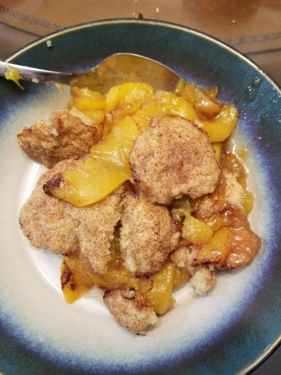
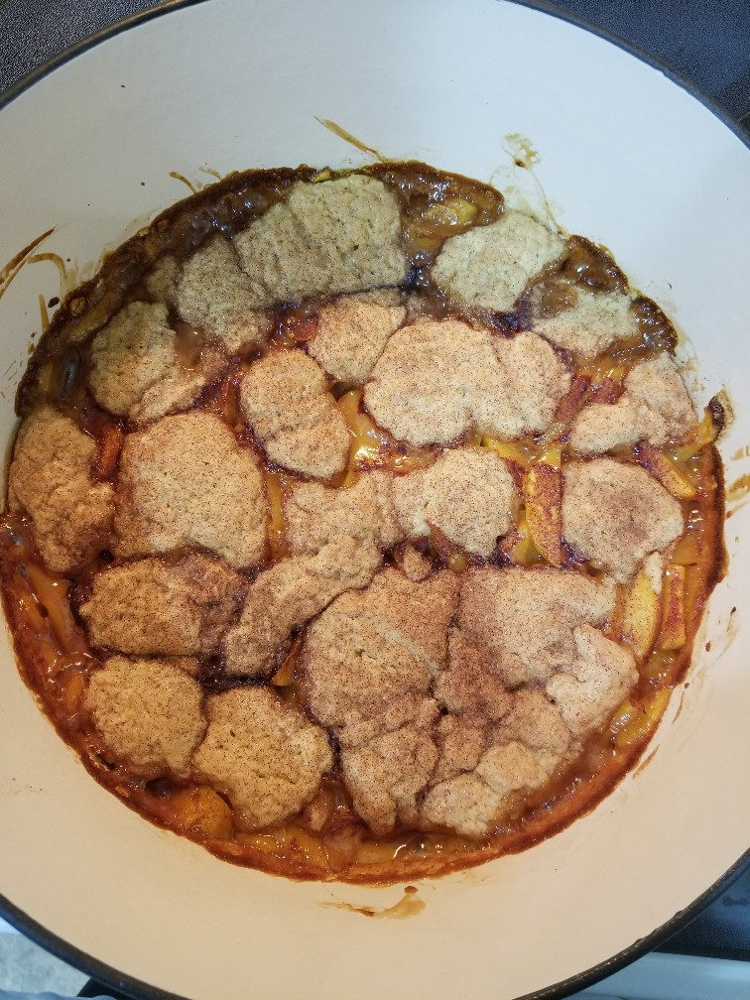

Fresh Southern Peach Cobbler
Originally from: All Recipes
Ingredients
- 8 fresh peaches, peeled and sliced
- 1/4 cup sugar (50g)
- 1/4 cup brown sugar (50g)
- 1/4 tsp cinnamon
- 1/8 tsp nutmeg
- 1 tsp lemon juice
- 2 tsp cornstarch
- 1 cup all-purpose flour (130g)
- 1/4 cup sugar (50g)
- 1/4 cup brown sugar (50g)
- 1 tsp baking powder
- 1/2 tsp salt
- 6 Tbl unsalted butter, chilled and cut into small pieces
- 1/4 cup boiling water
- cinnamon-sugar
- 3 Tbl sugar
- 1 tsp cinnamon
Directions
- Combine 1/4 cup white and brown sugar, cinnamon, nutmeg, lemon juice, and cornstarch. Stir in peaches. Bake in 425° oven 10 minutes.
- In large bowl combine remaining dry ingredients. Cut in butter to make coarse meal, then stir in boiling water until just combined.
- Remove peaches from over, and drop in spoonfuls of topping. Sprinkle cinnamon sugar on top. Bake until golden around 30 minutes.
Notes
-
2020-06-29 - Made according to recipe with 6 peaches, some of which may have been underripe. Still came out good - more peaches probably would make for a better ratio however.

